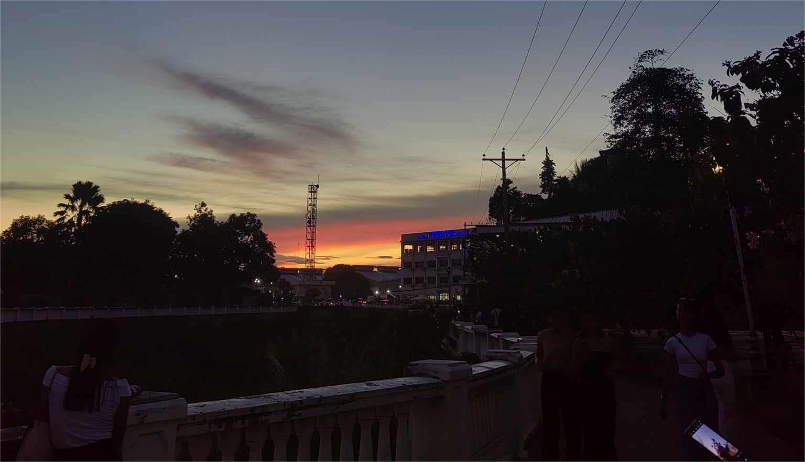

Photographer
Photography is more than just taking pictures—it is the art of capturing moments, emotions, and stories in a single frame. A photographer is not merely someone who points a camera at a subject; they are an observer of life, a storyteller, and an artist who uses light, composition, and timing to preserve moments that might otherwise slip away unnoticed. The journey of being a photographer is one of constant discovery, creativity, and connection.
My name is Erah Zyra Isidto 19 years old I live in Disgson Bonifacio Miss occ I like dancing and capturing the beauty of everyday moments. I am creative soul with a passion for photography. I'm always exploring new ideas and pushing creative boundaries
Sunsets is my favarite view beacuse it is an act as a natural time cue, signalling the end of the day and the transition to a more relaxed state.
